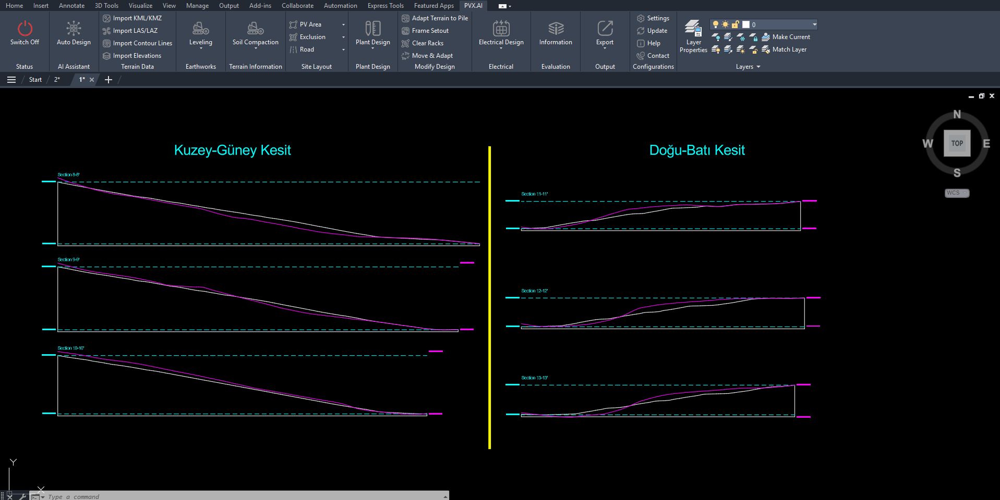
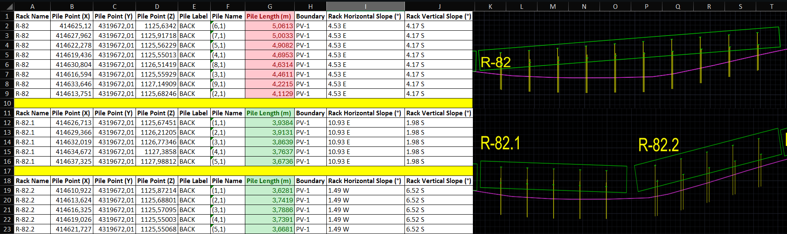

Case 01 · Terrain Analysis
Terrain optimization and cut-fill comparison
Arazi eğim analizi ve hafriyat senaryolarının tasarım üzerindeki etkisini inceleyen teknik çalışma.

Problem Tanımı
Bu çalışmada eğimli ve sert zeminli bir sahada, kazı-dolgu hacminin taşıyıcı sistem seçimine ve saha düzenine etkisi değerlendirilmiştir. Hedef; teknik uygulanabilirliği koruyarak hafriyat yükünü azaltmaktır.
Proje Bağlamı
Analiz kapsamında aynı saha sınırları korunmuş, yalnızca zemin uyarlama yaklaşımı değiştirilmiştir. Kıyaslama, klasik layout yaklaşımı ile terrain adaptasyonlu yaklaşım arasında yapılmıştır.
Kullanılan Yöntem
Varsayımlar doğrultusunda eğim sınıflaması, contour bazlı kesit değerlendirmesi ve pile boyu etkisi bir arada ele alınmıştır. Kesitler üzerinden kazı-dolgu dağılımı karşılaştırılmıştır.
Teknik Analiz


Elde edilen bulgular, terrain adaptasyonu sonrası saha içinde yük dağılımının dengelendiğini ve kritik bölgelerdeki hafriyat ihtiyacının azaldığını göstermiştir.
Bulgular
- Cut-fill dengesinde daha kontrollü dağılım elde edildi.
- Yüksek eğim bölgelerinde taşıyıcı sistem baskısı azaldı.
- Saha uygulama sırası daha öngörülebilir hale geldi.
Sonuç
Teknik değerlendirme sonucunda terrain uyumlu tasarımın, hem hafriyat hem de mekanik planlama açısından daha sürdürülebilir bir karar çerçevesi sunduğu görülmüştür.
Teknik Çıkarımlar
Bu çalışma, layout kararının yalnızca enerji üretimi değil, aynı zamanda saha inşaat maliyeti ve süre planı üzerinde de doğrudan etkili olduğunu göstermektedir.